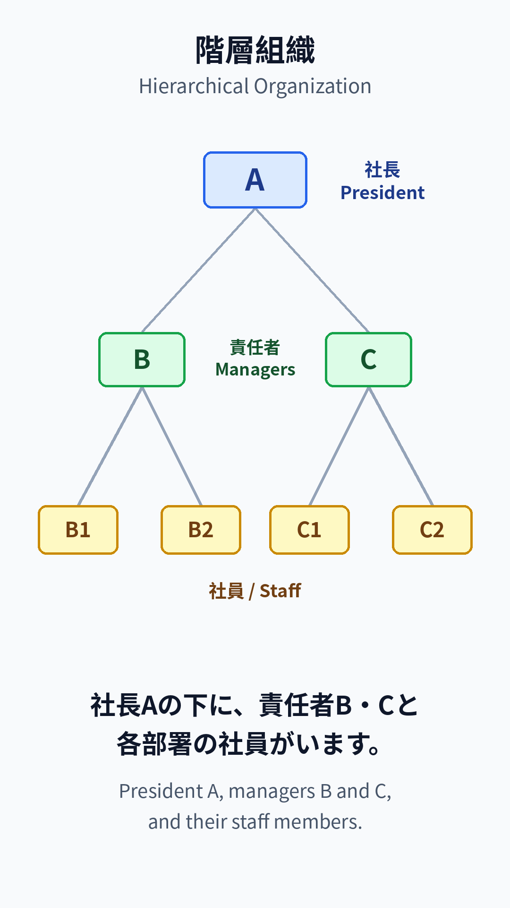
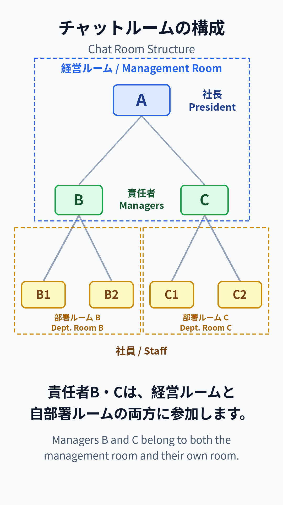
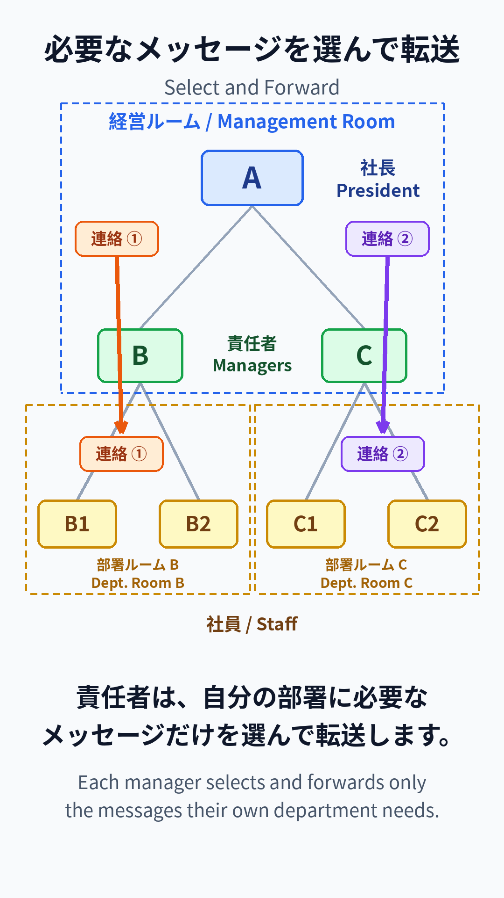

TransWorks の基本的な使い方をご案内します。A quick guide to using TransWorks.
1アプリ紹介About TransWorks
TransWorks は、言葉の壁を越える多言語チャットアプリです。TransWorks is a multilingual chat app that breaks language barriers.
メッセージは、相手の母国語に自動で翻訳されて届きます。Messages are automatically translated into each recipient's language.
料金はルームのオーナーが払い、メンバーは無料です。The room owner pays; members use it for free.
2初期設定Getting Started
アカウントを登録してログインします。Register an account and log in.
チャットルームを作成します。Create a chat room.
QR コードを表示して、メンバーに読み取ってもらえば招待完了です。Show the QR code and have members scan it to join.
3基本のやり取りBasic Messaging
母国語のまま入力して送信します。相手には相手の母国語で届きます。Type in your own language and send. It arrives in the recipient's language.
メッセージをタップすると、翻訳して話します。Tap a message to hear the translation.
ダブルタップすると、原文を読み上げます。Double-tap to hear the original.
マイクで音声入力もできます。You can also use voice input with the mic.
+ボタンから写真を添付すると、写真の中の文字も翻訳されます。Attach a photo with the + button, and the text in it gets translated.
OCR テキストをタップすると、全文を表示できます。Tap the OCR text to see the full content.
4階層組織での伝達Hierarchical Communication
階層のある組織でも使えます。TransWorks works for hierarchical organizations too.
責任者は、経営ルームと自部署ルームの両方に参加します。Managers belong to both the management room and their own room.
自分の部署に必要なメッセージだけを選んで転送できます。They forward only the messages their department needs.
メッセージを長押しして「マイルームに共有」を選びます。Long-press a message and choose "Share to My Room."
元のメッセージは画像として残り、編集できません。翻訳も並んで表示されます。The original is kept as an image and cannot be edited. Translations appear alongside.

① 階層組織1. Hierarchy

② ルームの構成2. Room structure

③ 選んで転送3. Select & forward
5お知らせAnnouncements
大事な連絡は、長押しして「お知らせに投稿」します。For important notices, long-press and choose "Post to Announcements."
お知らせはタイムラインに流されず、メガホンからいつでも見られます。Announcements never scroll away — open them anytime from the megaphone icon.
投稿できるのはオーナーと管理者だけです。Only owners and admins can post.
6AI 機能AI Features
ChatGPT タブでは、母国語で AI に質問できます。In the ChatGPT tab, ask the AI questions in your own language.
翻訳アイコンで、翻訳と音声のエンジンを切り替えられます(Google / ChatGPT / Gemini)。Use the translation icon to switch engines (Google / ChatGPT / Gemini).
7オーナーの管理Owner Management
コインアイコンで、ポイント残高と利用履歴を確認できます。Tap the coin icon to check your point balance and usage history.
ポイントはアプリ内で購入します。Buy points in the app.
管理者設定から、メンバーの管理ができます。Manage members from the admin settings.
8安心・読みやすさSafety & Accessibility
ハラスメントを感じたら、画面をダブルタップ。透かし入りの記録が保存され、管理者にも送られます。If you experience harassment, double-tap the screen. A watermarked record is saved and sent to the admin.
背景を長押しすると、文字の大きさを変えられます。Long-press the background to change the text size.
スピーカーをオンにすると、新しいメッセージを自動で読み上げます。Turn on the speaker to have new messages read aloud automatically.